Korisničko uputstvo za funcionalnu integraciju WooCommerce i Business Central
Ovaj dokument pruža detaljan pregled funkcionalne integracije između WooCommerce-a, jedne od vodećih e-commerce platformi, i Microsoft Dynamics 365 Business Central-a, moćnog ERP rešenja. Integracija omogućava preduzećima da pojednostave i automatizuju ključne procese između svoje online prodavnice i poslovnog sistema u pozadini, čime se smanjuje ručni rad i poboljšava tačnost podataka.
1. Objavljivanje i uklanjanje artikala sa WooCommerce-a
Funkcionalnost objavljivanja/uklanjanja omogućava korisnicima da kontrolišu koji artikli iz Microsoft Dynamics 365 Business Central sistema će biti dostupni za prodaju na WooCommerce online prodavnici.
Ova funkcija pruža fleksibilnost u upravljanju online katalogom proizvoda direktno iz Business Central-a, bez potrebe za prijavljivanjem u WooCommerce administratorski panel.
1.1 Objavljivanje artikala
Da biste učinili artikal dostupnim na WooCommerce-u:
- Otvorite karticu artikla u Business Central-u.
- Proverite da su sva obavezna polja popunjena (npr. naziv, opis, cena, slika, kategorija).
- Koristite akciju Objavi stavku na WooCommerce da biste objavili artikal na web prodavnicu.
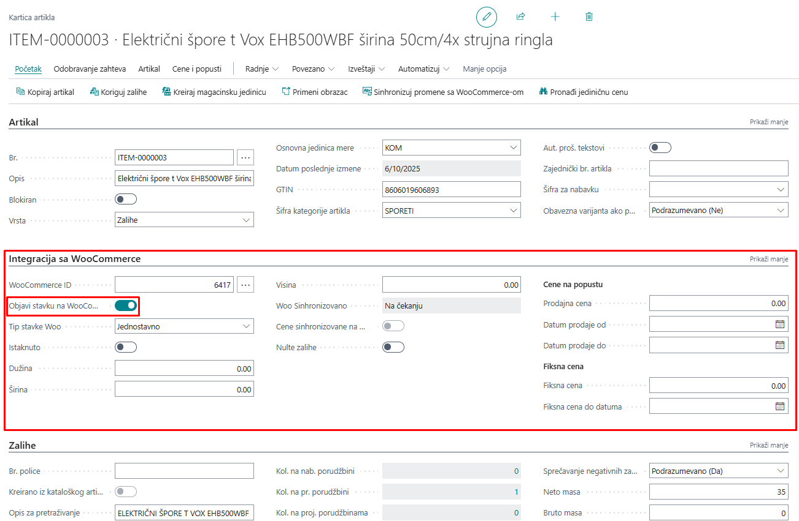
1.1.1 Slike
Na kartici artikla imamo sekciju Slika, gde možemo otvoriti URL-ove slika i rasporediti ih po željenom redosledu, tako da se prilikom objavljivanja artikla na WooCommerce prikazuju slike u željenom redosledu. Pored URL-ova se nalazi i pregled slika.
Slike moraju biti raspoređene pre objavljivanja artikla na WooCommerce.
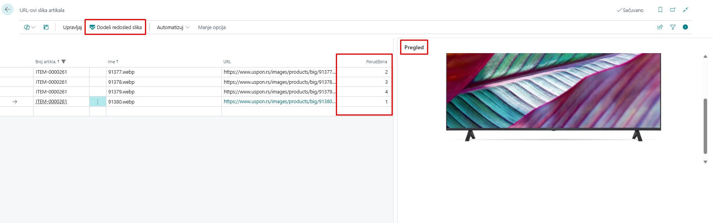
1.1.2 Atributi artikla
Na kartici artikla nalazi se sekcija Atributi artikla, koja prikazuje specifikacije artikla kao što su proizvođač, snaga, model i drugi relevantni detalji. Ovaj spisak atributa može se prilagođavati i menjati prema vašim potrebama.
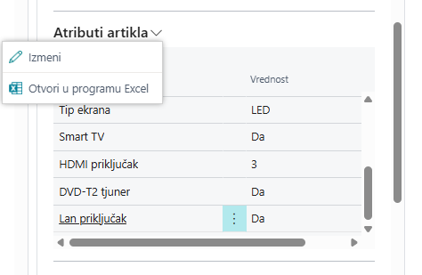
Pored toga, postoji posebna stranica Atributi artikla na kojoj se upravlja svim atributima artikala. Na vrhu te stranice nalaze se akcije Pošalji atribut na WooCommerce i Pošalji sve atribute na WooCommerce, koje omogućavaju sinhronizaciju pojedinačnih ili svih atributa sa WooCommerce prodavnicom.
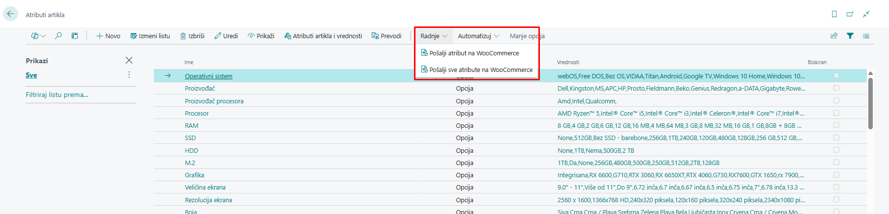
1.1.3 Kategorije artikala
Za nesmetanu integraciju između Business Central-a i WooCommerce-a, neophodno je da svaki artikal u Business Central-u bude dodeljen određenoj kategoriji. Pravilna kategorizacija obezbeđuje tačnu sinhronizaciju proizvoda, poboljšava organizaciju i olakšava efikasno upravljanje zalihama i podacima o prodaji na obe platforme.
Kategoriju artikla možemo dodeliti direktno na kartici artikla, birajući je sa liste kategorija artikala prethodno definisanih u sistemu.
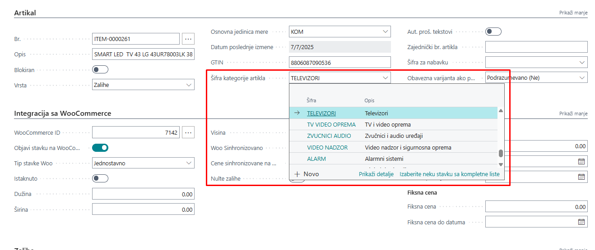
Lista kategorija artikala sastoji se od roditeljskih i podkategorija, koje možemo ručno poslati na WooCommerce, gde svaka kategorija dobija svoj ID.
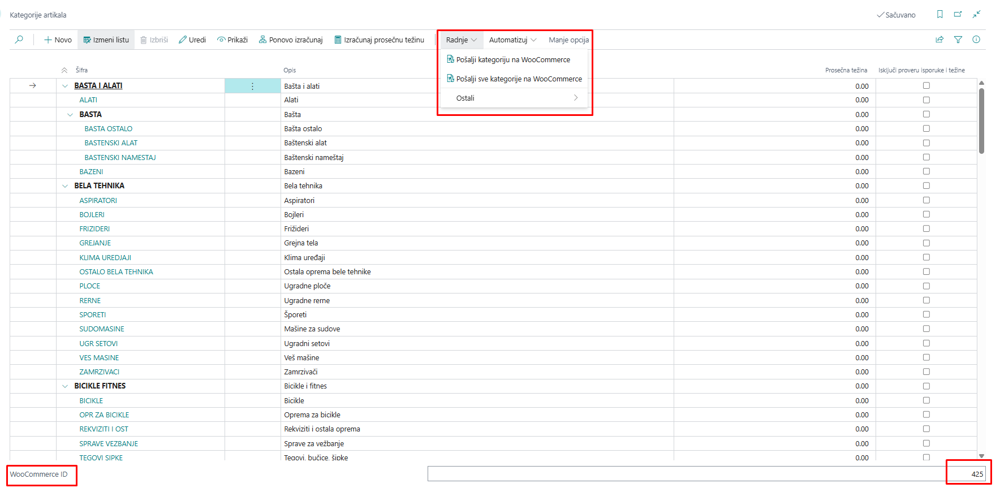
1.1.4 Cene
Cene artikala se prvenstveno određuju u Business Central-u i automatski se sinhronizuju sa WooCommerce-om kako bi se obezbedila usklađenost između oba sistema. Sve izmene cena u Business Central-u biće prikazane na WooCommerce prodavnici prilikom sledećeg ciklusa sinhronizacije.
Integracija podržava standardne prodajne cene, kao i specijalne cene, popuste i promotivne cene definisane u Business Central-u. Važno je pravilno konfigurisati pravila cena unutar Business Central-a kako bi se izbegli konflikti ili nepravilno prikazivanje cena u WooCommerce prodavnici.
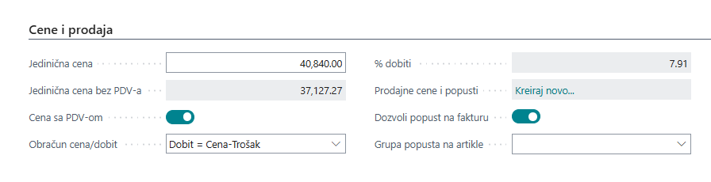
1.1.5 Zalihe
Sinhronizacija zaliha između Business Central-a i WooCommerce-a se obavlja putem automatizovanog zadatka (batch job) pod nazivom Sync Vendor Inventory on Items. Ovaj zadatak se pokreće u unapred definisanim intervalima, obično zakazanim kroz Stavke reda čekanja za posao u Business Central-u, i obezbeđuje da količine zaliha u WooCommerce-u tačno odražavaju stvarni nivo zaliha koje se prate u Business Central-u.
Redovnim pokretanjem ovog zadatka, preduzeća mogu održavati ažurnost dostupnosti zaliha u WooCommerce prodavnici bez potrebe za ručnom intervencijom, čime se smanjuje rizik od prekomerne prodaje ili neslaganja u zalihama. Pravilna konfiguracija rasporeda zadatka je ključna za postizanje željene učestalosti ažuriranja i nesmetano upravljanje zalihama na obe platforme.
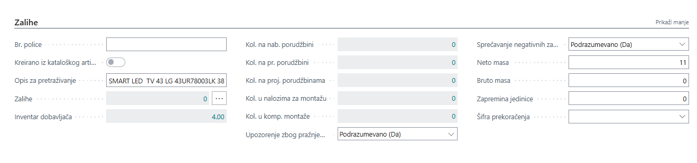
Kada se artikal objavi, on se kreira ili ažurira u WooCommerce-u sa svim mapiranim informacijama, uključujući:
- Naziv i opis artikla
- Količinu zaliha
- Slike
- Cena (u skladu sa definisanim pravilima cena)
- Kategorije i atribute
Ukoliko je opcija Automatska sinhronizacija omogućena (u podešavanju WooCommerce-a), objavljivanje može da se izvršava automatski pri promenama na artiklu.
1.2 Uklanjanje artikala
Da biste uklonili artikal sa WooCommerce prodavnice:
- Otvorite karticu artikla u Business Central-u.
- Onemogućite opciju Objavi stavku na WooCommerce.
Ovim se proizvod neće izbrisati iz WooCommerce-a, već će mu status biti promenjen u „draft“ („nacrt“) ili „hidden“ („sakriven“) u zavisnosti od podešavanja, čime se onemogućava naručivanje od strane kupaca.
Ova funkcionalnost je ključna za upravljanje proizvodima koji se prikazuju na vašoj WooCommerce prodavnici i za održavanje doslednosti i ažurnosti podataka direktno iz Business Central-a.
2. Sinhronizacija artikala
Funkcionalnost Sinhronizuj artikle omogućava automatski prenos podataka o proizvodima iz Dynamics 365 Business Central-a u vašu WooCommerce prodavnicu. Time se obezbeđuje da artikli definisani u ERP sistemu budu vidljivi i dostupni za prodaju online, bez potrebe za duplim unosom podataka.
Kada objavimo artikal na WooCommerce i izvršimo određene izmene, te promene možemo ručno sinhronizovati sa WooCommerce-om pomoću akcije Sinhronizuj promene sa WooCommerce-om na kartici artikla.
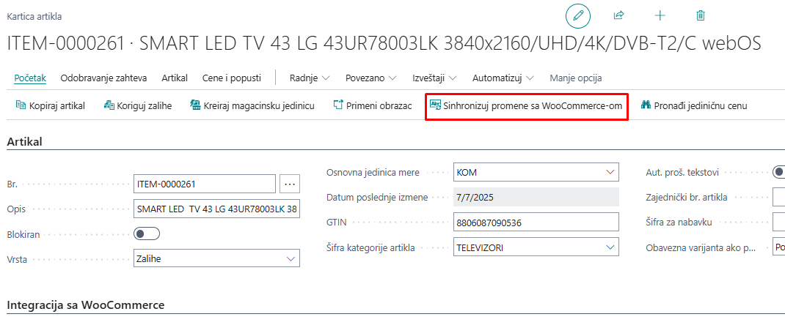
2.1 Automatska sinhronizacija
Sekcija Podešavanja automatske sinhronizacije na stranici Podešavanje WooCommerce-a omogućava uključivanje automatske sinhronizacije podataka o artiklima iz Business Central-a u WooCommerce, u pozadini. Kada su ove opcije aktivirane, sistem će automatski slati izmene u WooCommerce svaki put kada se izvrše povezane promene u Business Central-u – čime se eliminiše potreba za ručnim sinhronizovanjem.
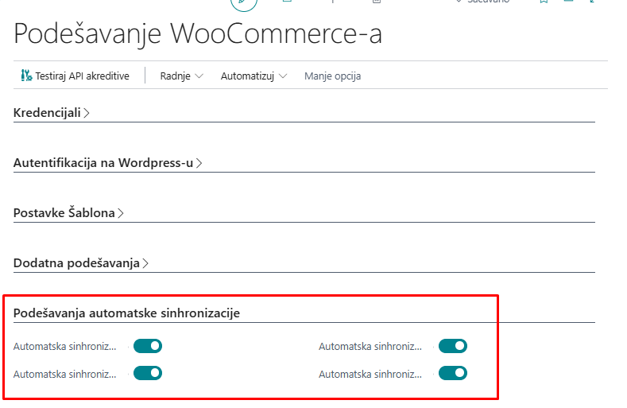
Dostupne opcije:
-
Automatska sinhronizacija stavke – Automatski sinhronizuje izmene na artiklu (npr. naziv, opis, cena, zalihe) sa WooCommerce-om kada se kartica artikla izmeni u Business Central-u.
-
Automatska sinhronizacija kategorije artikla – Automatski ažurira kategorije artikala u WooCommerce-u kada se kategorije kreiraju ili izmene u Business Central-u.
-
Automatska sinhronizacija atributa stavke – Obezbeđuje da se atributi proizvoda (npr. boja, veličina, materijal) sinhronizuju sa WooCommerce-om u realnom vremenu kada se dodaju ili izmene.
-
Automatska sinhronizacija vrednosti atributa stavke – Šalje izmene vrednosti atributa (npr. „Crvena“ za boju) u WooCommerce, obezbeđujući doslednost između ERP sistema i online prodavnice.
Ova podešavanja su posebno korisna za preduzeća koja često ažuriraju svoj katalog proizvoda i žele da održe tačnost podataka u realnom vremenu između sistema.
Uverite se da je WooCommerce API konekcija ispravno podešena i funkcionalna kako biste izbegli neuspele pokušaje sinhronizacije.
2.2 Ručna sinhronizacija
Takođe možemo ručno pokrenuti akcije za sinhronizaciju artikala. Ove akcije se nalaze u podešavanjima WooCommerce-a.
-
Automatsko objavljivanje stavki – Pokreće akciju koja automatski objavljuje artikle na WooCommerce.
-
Automatsko objavljivanje kategorija stavki – Pokreće akciju koja automatski objavljuje kategorije artikala na WooCommerce.
-
Ažuriraj URL-ove slika – Pokreće akciju koja ažurira URL-ove slika za sve artikle.
-
Poništi objavljivanje stavki koje prelaze maksimalnu težinu – Pokreće akciju koja uklanja sa WooCommerce-a sve artikle čija težina prelazi maksimalno dozvoljenu.
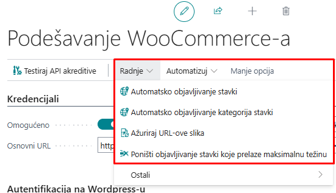
3. Kreiranje prodajnih naloga iz WooCommerce-a
Integracija između WooCommerce-a i Microsoft Dynamics 365 Business Central-a omogućava nesmetanu sinhronizaciju prodajnih naloga. Kada kupac izvrši porudžbinu u WooCommerce prodavnici, ta porudžbina se automatski preuzima i kreira kao Prodajni nalog u Business Central-u.
Ovaj proces obezbeđuje potpuno integrisan tok od online prodaje do pozadinskih poslovnih operacija, eliminišući potrebu za ručnim unosom i smanjujući rizik od grešaka.
3.1 Pregled procesa uvoza porudžbina
Uvoz porudžbina iz WooCommerce-a obavlja se putem Zahtevi za prijemno sanduče WooCommerce, a proces se obično izvršava preko zakazanih zadataka (Stavke reda čekanja za posao). Ipak, postupak se može pokrenuti i ručno kada je to potrebno.
Koraci u procesu kreiranja porudžbine:
-
Preuzimanje/uvoz porudžbina
Porudžbine kreirane u WooCommerce-u preuzimaju se akcijom Fetch WooCommerce Orders. Ova akcija preuzima sve nove porudžbine i smešta ih u Prijemno sanduče WooCommerce unutar Business Central-a. -
Obrada zahteva
Nakon uvoza porudžbina u inbox, funkcija BCY Process Inbox Requests obrađuje svaki zahtev i generiše odgovarajući Prodajni nalog u Business Central-u. -
Kreiranje prodajnog naloga
Na osnovu podataka iz WooCommerce-a, kreira se kompletno strukturirani Prodajni nalog,
koji uključuje:
- Informacije o kupcu
- Adrese za isporuku i naplatu
- Poručeni artikli sa količinama i cenama
- Načini isporuke i napomene
- Detalji o plaćanju
3.2 Automatizacija putem Stavki reda čekanja za posao
Proces uvoza porudžbina se najčešće automatizuje pomoću Stavki reda čekanja za posao u Business Central-u, i to kroz sledeće zadatke:
- Fetch WooCommerce Orders
- BCY Process Inbox Requests
- BCY Woo Get Sales Orders
Ovi zadaci su zakazani da se izvršavaju periodično, čime se omogućava kontinuirana sinhronizacija porudžbina između WooCommerce-a i Business Central-a bez potrebe za ručnom intervencijom.
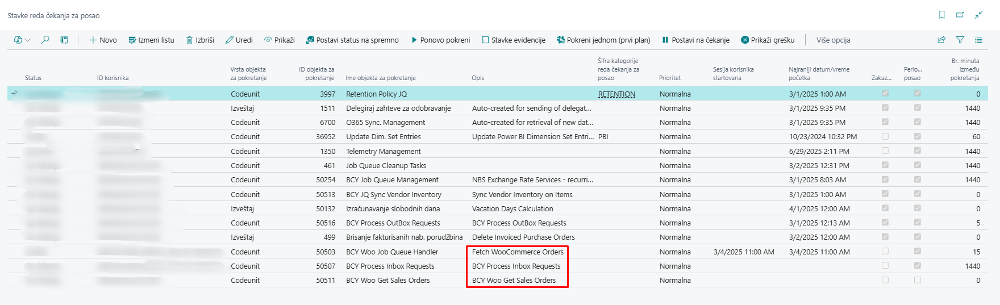
3.3 Ručno pokretanje procesa (opciono)
Ukoliko je potrebno, ceo proces se može pokrenuti i ručno:
- Otvorite stranicu Zahtevi za prijemno sanduče WooCommerce.
- Kliknite na Preuzmi/Uvezi prodajne porudžbine kako biste preuzeli najnovije porudžbine.
- Kada se porudžbine pojave u inbox-u, kliknite na Obradi zahtev da biste ih konvertovali u Prodajne naloge.
Ovaj ručni tok rada je posebno koristan tokom faza testiranja ili kada je potrebno rešavanje problema.
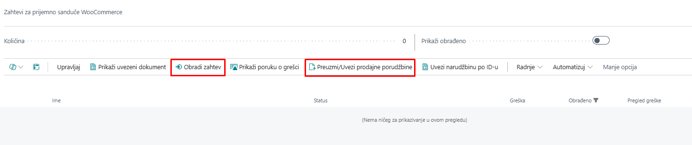
Napomena: Porudžbine koje ne mogu biti obrađene zbog nedostajućih ili nevažećih podataka ostaće u Prijemnom sandučetu sa odgovarajućom porukom o statusu. Možete pregledati logove i preduzeti korektivne radnje pre ponovnog pokušaja obrade.
Preporuka: Uvek se postarajte da su mapiranje artikala, šabloni kupaca, kao i metode isporuke i plaćanja ispravno konfigurisani kako biste izbegli greške pri uvozu.
4. Zahtevi za prijemno sanduče i odlaznu poštu WooCommerce
Integracija između Business Central-a i WooCommerce-a obuhvata dva ključna elementa za upravljanje i praćenje razmene podataka:
- Zahtevi za prijemno sanduče WooCommerce – dolazni podaci (zahtevi iz WooCommerce-a)
- Zahtevi za odlaznu poštu WooCommerce – odlazni podaci (zahtevi ka WooCommerce-u)
Ove stranice omogućavaju korisnicima da prate tok informacija, pregledaju statuse i reše eventualne greške koje se pojave tokom sinhronizacije.
4.1 Zahtevi za prijemno sanduče WooCommerce
Zahtevi za prijemno sanduče WooCommerce čuvaju podatke primljene sa WooCommerce prodavnice, kao što su:
- Nove porudžbine
- Informacije o kupcima
- Ažuriranja porudžbina
Svaki zapis sadrži detaljne informacije, uključujući:
- Tip zahteva (npr. Prodajni nalog)
- WooCommerce ID i vremensku oznaku
- Status obrade (npr. Na čekanju, Obradjen, Neuspešan)
- Povezane poruke o greškama
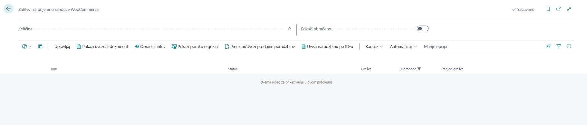
WooCommerce Inbox – najčešće korišćene akcije:
-
Preuzmi/Uvezi prodajne narudžbine
Preuzima nove prodajne naloge iz WooCommerce-a i čuva ih kao dolazne zahteve u inbox-u. -
Uvezi narudžbinu po ID-u
Omogućava ručni uvoz određene porudžbine iz WooCommerce-a unošenjem njenog jedinstvenog WooCommerce Order ID-ja. Korisno za testiranje ili rešavanje posebnih slučajeva. -
Obradi zahtev
Obradjuje izabrani zahtev i pokušava da ih konvertuje u prodajne naloge u Business Central-u. -
Prikaži uvezeni dokument
Otvara dokument (npr. prodajni nalog) koji je kreiran kao rezultat uspešno obrađenog zahteva. -
Prikaži poruku o grešci
Prikazuje detalje o greškama ako obrada nije uspela. Pomaže u identifikaciji nedostajućih podataka ili neispravnih mapiranja.
Kako funkcioniše:
- Podaci se preuzimaju korišćenjem akcije Preuzmi/Uvezi prodajne narudžbines (ručno ili preko Stavki reda čekanja za posao).
- Zahtevi se pojavljuju u Prijemnom sandućetu i obrađuju putem funkcije BCY Process Inbox Requests.
- Nakon obrade, kreiraju se zapisi (npr. prodajni nalozi) u Business Central-u i označavaju se kao završeni.
Zahtevi sa greškama ostaju u prijemnom sandučetu dok se ne isprave i ponovo obrade.
4.2 Zahtevi za odlaznu poštu WooCommerce
Zahtevi za odlaznu poštu WooCommerce beleži sve odlazne podatke koje Business Central šalje ka WooCommerce-u, kao što su:
- Objavljeni ili ažurirani artikli
- Promene kategorija i atributa
- Ažuriranja cena ili zaliha
Zahtevi za odlaznu poštu WooCommerce – najčešće korišćene akcije:
-
Procesuiraj
Ručno šalje izabrani zapis iz outbox-a ka WooCommerce-u. Korisno za ponovno slanje neuspelih zahteva ili pokretanje sinhronizacije bez čekanja na zakazane zadatke. -
Izbriši
Briše izabrane zapise iz odlazne pošte. Korisno za čišćenje test podataka ili nevažećih zapisa koje ne želite ponovo da šaljete. -
Prikaži povezani zapis
Otvara odgovarajući zapis u Business Central-u (npr. karticu artikla) koji je inicirao zahtev za sinhronizaciju. Pomaže korisnicima da brzo dođu do izvora podataka. -
Prikaži poruku o grešci
Prikazuje opis greške za neuspele pokušaje sinhronizacije. Pomaže u identifikaciji problema kao što su nedostajuća polja, neispravna mapiranja ili problemi sa konekcijom. -
Prikaži poruku zahteva
Prikazuje ceo JSON zahtev koji je poslat ka WooCommerce-u. Korisno za naprednu dijagnostiku ili verifikaciju sadržaja poruke. -
Prikaži poruku odgovora
Prikazuje odgovor koji je WooCommerce poslao nakon obrade zahteva. Pomaže u razumevanju da li je sinhronizacija bila uspešna ili je WooCommerce vratio konkretnu grešku.
Svaki zapis u odlaznoj pošti sadrži:
- Tip operacije (Kreiranje, Ažuriranje, Brisanje)
- Ciljani entitet (Artikal, Kategorija itd.)
- Status rezultata (Uspešno, Neuspešno)
- Poruku i odgovor WooCommerce-a
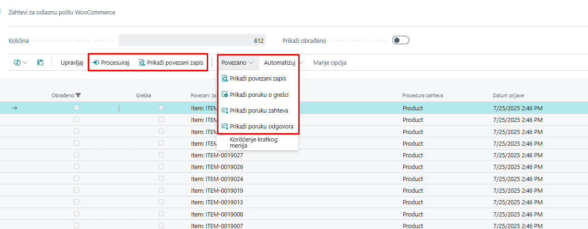
Kako funkcioniše:
- Kada se artikal ili povezani podaci izmene, generiše se zapis u odlaznoj pošti.
- Sistem šalje podatke ka WooCommerce-u putem API-ja (automatski ili ručno).
- Status se ažurira na osnovu odgovora koji stigne od WooCommerce-a.
Možete filtrirati zapise po statusu kako biste identifikovali neuspele pokušaje sinhronizacije i preduzeli korektivne mere.
4.3 Ručno i automatsko procesiranje
I prijemno sanduče i odlazna pošta se mogu upravljati ručno od strane korisnika ili automatski putem zakazanih zadataka (Stavke reda čekanja za posao).
Ove stranice pružaju potpunu transparentnost o tome koji podaci se razmenjuju između Business Central-a i WooCommerce-a i kada se to dešava.
Preporuka: Redovno pratite stranice prijemno sanduče i odlazna pošta, naročito nakon masovnih ažuriranja ili promena u konfiguraciji.
5. Podešavanje WooCommerce-a (AW)
Stranica Podešavanje WooCommerce-a predstavlja glavni centar za upravljanje integracijom između WooCommerce-a i Microsoft Dynamics 365 Business Central-a. Na ovoj stranici definiše se kako i kada se vrši sinhronizacija, kako se mapiraju entiteti, kao i na koji način se obrađuju porudžbine i artikli.
Ovaj deo dokumentacije prikazuje polja za podešavanje i dostupne akcije za funkcionalnu kontrolu.
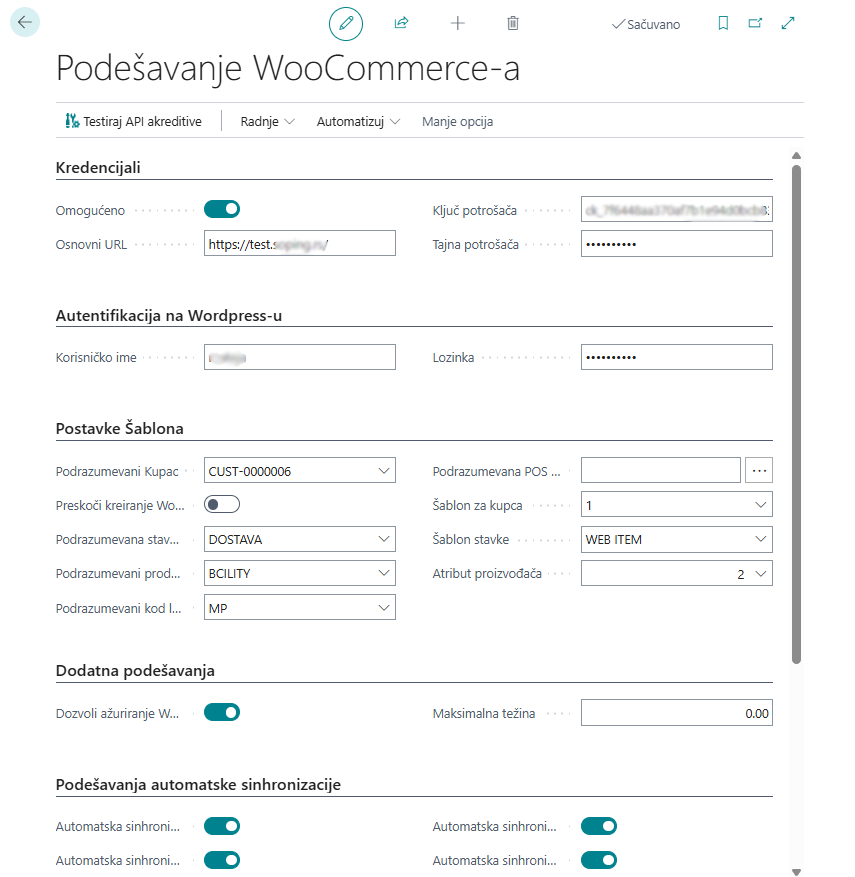
5.1 Glavna polja za podešavanje
Akreditivi (Credentials):
-
Omogućeno
Prekidač koji uključuje ili isključuje integraciju sa WooCommerce-om. -
Osnovni URL
URL vaše WooCommerce prodavnice. Ovo je osnovna adresa koja se koristi za svu API komunikaciju. -
Ključ potrošača
Javni ključ koji se koristi za autentifikaciju API zahteva iz Business Central-a ka WooCommerce-u. -
Tajna potrošača
Tajni ključ koji se koristi zajedno sa Ključem potrošača za sigurnu autorizaciju zahteva.
Autentifikacija na Wordpress-u:
- Korisničko ime
- Lozinka
Postavke šablona - podrazumevana podešavanja:
-
Podrazumevani kupac
Definiše podrazumevanog kupca ako korisnik nije registrovan na WooCommerce-u i koristi prodavnicu kao gost. -
Preskoči kreiranje Woo kupaca
Prekidač koji, kada je uključen, preskače kreiranje kupaca i koristi podrazumevanog kupca za goste. -
Podrazumevani kod lokacije
Određuje koja će lokacija zaliha u Business Central-u biti korišćena za sinhronizaciju količina sa WooCommerce-om. -
Podrazumevani prodavac
Definiše prodavca koji će automatski biti dodeljen uvezenim prodajnim nalozima. -
Podrazumevana POS jedinica
Definiše podrazumevanu POS jedinicu.
Dodatna podešavanja:
-
Dozvoli ažuriranje Woo ID
Kada je uključeno, omogućava ručne izmene u WooCommerce-u na karticama artikala, atributa, kategorija itd. -
Maksimalna težina
Definiše dozvoljenu maksimalnu težinu artikala koji se objavljuju na WooCommerce-u.
5.2 Akcije (Traka sa alatkama)
Gornja traka sa akcijama sadrži sledeće funkcije:
-
Testiraj API akreditive
Pokreće test da li su uneti API akreditivi ispravni. -
Automatsko objavljivanje, uklanjanje i ažuriranje - Više o ovim akcijama pogledajte u poglavlju o ručnoj sinhronizaciji.